Elements
HTML code has
open and closing tags. Some opening tags can contain attributes. The example below shows a div element with an id of title.
Some elements require attributes such as the img and anchor attribute. The div tag (as well as others) doesn't require an attribute
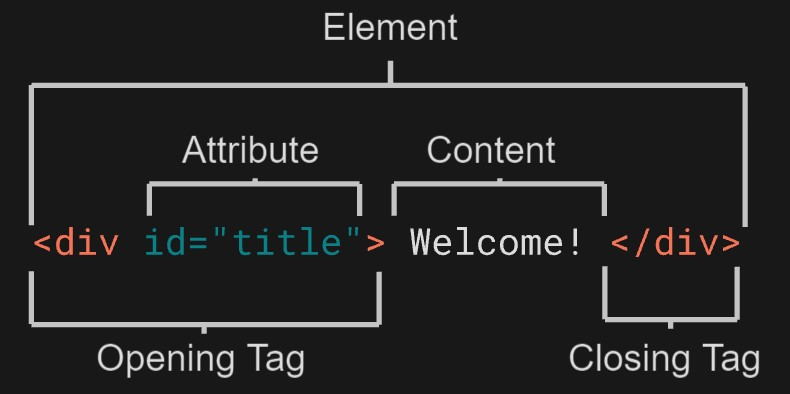
Hierarchy
In HTML, the code is written in a 'hierarchy'.
The code above shows that the
<html>
<div>
<p>
Welcome!
<p>
</div>
</html>
The code above shows that the
html tag is the parent of the div and p tags. In this instance, the div tag is the parent of the p tag, but the child of the html tag.
divs
The
For example, using a
div tag is used to group certain parts of the web page together. div stands for division. On their own, div tags don't have any visual representation on their own.
They are useful when particular styles are added dpeneidng on where it may be viewed on the web page.For example, using a
div for the footer of a page, the text will be smaller than the rest of the page.
Displaying Text
To display text, the
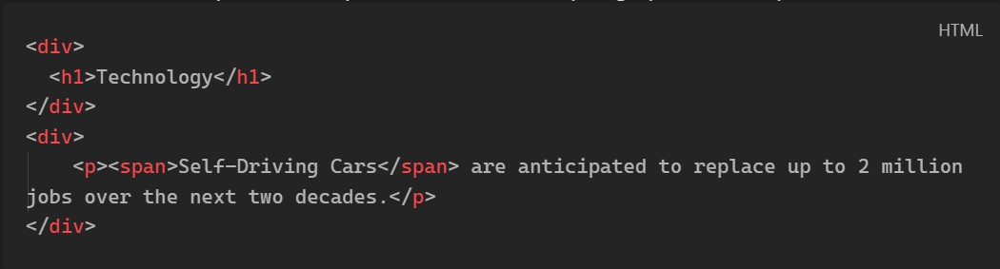
<p> or <span> tags can be used. <p> stands for paragraph. The <span> element is used to separate small pieces of text within a paragraph.
It's best to use <span> element to target specific pieces of content that is inline or on the same line as other text. <div> is best used to divide content into blocks.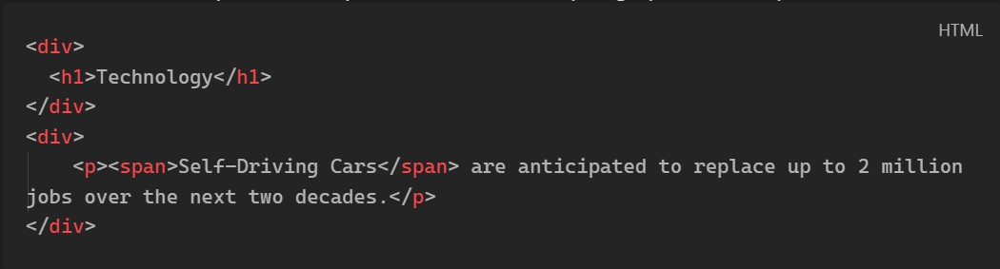
Styling Text & Line Breaks
Using the
-
-
Using the
<em> and <strong> elements will style the text accordingly:-
<em> : makes the text italic-
<strong> : makes the text boldUsing the
<br> element will push content onto a new line.
Unordered & Ordered Lists
The
<ul> element allows text to be listed in an unordered list. A bullet-point list as an example.
- Chicken
- Tortillas
- Sauce
- Cheese
<ol> element can be used instead.- Chicken
- Tortillas
- Sauce
- Cheese
<li> elements between the <ul> or <ol> elements like so:
<ul>
<li> Chicken </li>
<li> Tortillas </li>
<li> Sauce </li>
<li> Cheese </li>
</ul>
Images & Videos
To include images on a webpage, the
Elements can have multiple attributes depending on the element being used. Above, the img element contains an
Using the
HTML also has the capability of playing videos on a webpage. This can be done by using the
Like the
<img> element is used. As discussed in Elements, the <img> element requires the src attribute.
The src attribute needs a valid path to the image that is to be loaded. For example:<img src="blueSky.jpg" alt="An image showing a picture of a clear blue sky" /> Elements can have multiple attributes depending on the element being used. Above, the img element contains an
alt attribute which is used to describe the image. This is particulary useful for accessibility options (screen readers). The text will show if the image can't be loaded too. Some HTML elements don't require a closing tag, like the <img> tag.Using the
alt attribute also helps search engines find a website too. This is apart of the Search Engine Optimization (SEO). Search engines cannot see images, but can use the text searched.HTML also has the capability of playing videos on a webpage. This can be done by using the
<video> </video> element.
<video src="myVideo.mp4" width="256" height="256" controls>Video Unavailable...</video>Like the
img tag, the video tag requires certain attributes.src= Location of where the video iswidth= Sets the width of the videoheight= Sets the height of the videocontrols= Tells the browser to provide basic controls. Such as play/pause, timeline, volume, full screen, and extra options. Thecontrolsattribute is required otherwise the video will not show.
Linking
To link to another website or webpage, the
The text YouTube will be displayed and when clicked, will take the user to YouTube (or any website/webpage specified by the
To link to a webpage on the same website, a relative path must be provided to the webpage.
The anchor tag has the
By default, hyperlinks are displayed as text. Nesting tags, images can be clickable hyperlinks too.
The above line will display the YouTube logo which is then clickable to take the user to YouTube.com.
Hyperlinks can be created to link to specific headers within the same page.
<a> tag is used. The a stands for anchor. This tag requires a href attribute which stands for hypertext reference, and is used to specifiy where the hyperlink should take the user.<a href="https://youtube.com">YouTube<a>The text YouTube will be displayed and when clicked, will take the user to YouTube (or any website/webpage specified by the
href attribute).To link to a webpage on the same website, a relative path must be provided to the webpage.
<a href="./contact_us.html">Contact Us<a>The anchor tag has the
target attribute which determines where the web page will open._blank: opens the hyperlink in a new window/tab_parent: opens the hyperlink in the parents window/tab_self: opens the hyperlink in the same tab (default)_top: opens the hyperlink in the full body of the window
By default, hyperlinks are displayed as text. Nesting tags, images can be clickable hyperlinks too.
<a href="https://youtube.com"><img src="youtubeLogo.jpg"></a>The above line will display the YouTube logo which is then clickable to take the user to YouTube.com.
Hyperlinks can be created to link to specific headers within the same page.
HTML Document Standards
When creating a new HTML file,
<!DOCTYPE html> is the first line that is required. This allows the browser to know that the file is a HTML file by starting with the document type declaration.
Using that at the top of every HTML file future proofs the file for any newer versions of HTML.The <html> tag
After the
<DOCTYPE! html>, the <html> </html> tags must be used. All HTML markup will go between these two tags.
Whilst the browser will render things without these tags, the browser may interpret additional HTML incorrectly.
The <head> tag
Before the
<body> tags, the <head> </head> tags are used. Anything between the head tags doesn't show on the web page itself,
as they mostly contain metadata about the page. The only exception to this is the <title> </title> tag (discussed in the next section).
Page Titles
Using the
As an example, writing the following
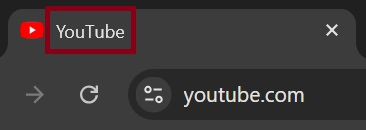
<title> </title> tags within the head tags, allows the developer to set a title for the page.As an example, writing the following
<title> YouTube </title>, will show like this in the browser used: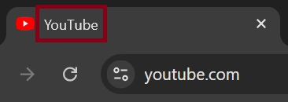
The <body> tag
After the
As an example, the markup of a basic HTML file using the tags explained above would look something like this:
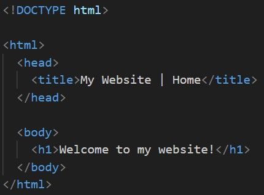
head tag, the <body> </body> tag is used. The body tag will contain all other HTML content within the webpage.As an example, the markup of a basic HTML file using the tags explained above would look something like this:
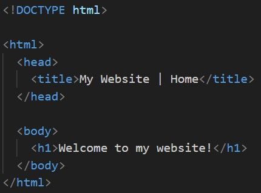
Whitespace and Indentation
As HTML files grow in size, using whitespace and indentation makes the file easier to read. Consider the following:
Consider the same markup from above, but with whitespace and indentation applied:
<!DOCTYPE html>
<html>
<body>
<h1>Whitespace</h1><p>Whitespace and indentation make HTML documents easier to read.</p></body>
</html>
Whilst the above may not be that difficult to read, but as the HTML markup grows with more complex webpages, the more difficult it will become to read.Consider the same markup from above, but with whitespace and indentation applied:
<!DOCTYPE html>
<html>
<body>
<h1>Whitespace</h1>
<p>Whitespace and indentation make HTML documents easier to read.</p>
</body>
</html>
The markup above is much easier to read and the hierarchy can be seen much clearer too. The W3C are responsible for maintaining the style for HTML standards. W3C recommend 2 spaces of indentation.
Comments
Like most other languages, HTML allow developers to write comments in their document. This is useful when coming back to a document after a long time, or if someone new looks at the document.
A HTML comment can be done like so:
A HTML comment can be done like so:
<html>
<!-- This is a HTML comment -->
</html>
When comments are written, the browser does not render them to the webpages itself. Comments are only visible when viewing the pages source from a browser or opening the HTML file in an editor.
Tables
Creating tables in HTML is done with a few different tags. The main tag for creating a table is the
However, each row and column are defined differently to actually make a table.
To make the table above, the following HTML markup is used:
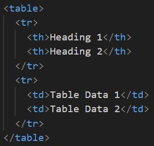
A HTML table is broken down into 4 different tags.
<table> </table> tag.However, each row and column are defined differently to actually make a table.
| Heading 1 | Heading 2 |
|---|---|
| Table Data 1 | Table Data 2 |
<table> </table>- When creating a HTML table, these tags need to be used.This won't render anything by default.<tr> </tr>- Stands for table row. This defines a single row in the table.<th> </th>- Stands for table header. This tags are used to define the heading of a column in a table. By default, the text will be bold.<td> </td>- Stands for table data. This tag is used to insert a 'cell' underneath the heading.
th or td used will create cells horizontally. The th tag isn't required but helps identify the data in that column.Tables - Spanning Columns & Rows
The
With
Using
The table above used both
The code for both tables can be seen below.
th and td tags have an attribute colspan and rowspan. These tags allow a row or column to be 'spanned' across the number of rows or columns defined. The table below shows the table heading tag spanned across 3 columns.| Leg Day | ||
|---|---|---|
| Exercise | Reps | Rest Time (sec) |
| Barbell Back Squat | 8 - 10 | 90 |
colspan="3" being defined, the top row will be spanned across 3 columns.Using
rowspan, the cells will be spanned across the number of rows specified.
| Arms | ||
|---|---|---|
| Exercise | Reps | Rest Time (sec) |
| Dumbbell Bicep Curl (Drop Set) | 8 - 10 | 90 |
| 4 - 6 | ||
colspan and rowspan. The colspan is used to make the 'Arms' heading span scross the 3 columns. rowspan is used to allow 'Dumbbell Bicep Curl (Drop Set)' and the '90' to span across 2 rows.The code for both tables can be seen below.
colspan |
rowspan |
|---|---|
| 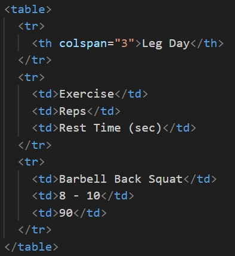 | 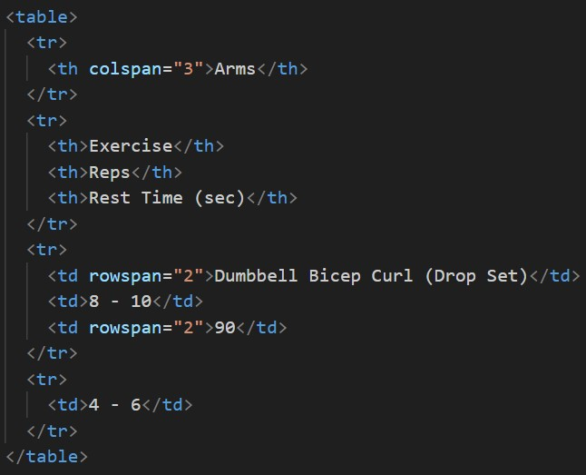 |
Tables - Body, Head, and Footer
As tables grow in size, sections of the table can be sectioned off with the
<tbody> </tbody> tags. The same rules apply for table headers too, with the <thead> </thead> tags.
Tables might contain footers to show the total result of a particular data set, the <tfoot> </tfoot> tags can be used.
Semantics
When building webpages, a combination of non-semantics and semantic tags are used. Semantic meaning 'relating to meaning'. Semantic elements that provide information about the content between the opening and closing tags.
For example, these might be tags like:
For example, these might be tags like:
<article><table><button><main><footer>
<div><span>
- Accessibility - Makes web pages more readable for screen readers
- SEO - Search Engine Optimization, search engines are better at identifying the content of a website and weight the most important content appropiately
- Easy to Understand - Semantic HTML also makes the websites source code easier to read for other developers
Header and Nav Tags
The
In most cases, the header of a document or web page is the focal point. The header will mostly contain information that will exist throughout. With the example above, all web pages for this website will contain navigation and a heading. The information may differ depending on the page, but certain elements will persist.
<header> and </header> tag is a container usually for either navigational links or introductory information containing <h1> to <h6> headings.
As an example, this would be a basic header for a webpage
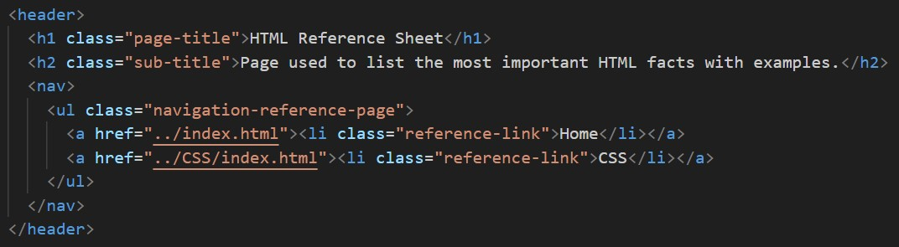
The code example above is the header tags for this web page!In most cases, the header of a document or web page is the focal point. The header will mostly contain information that will exist throughout. With the example above, all web pages for this website will contain navigation and a heading. The information may differ depending on the page, but certain elements will persist.
Main and Footer Tags
Two more structual elements are the
<main> </main> and <footer> </footer> tags. The main tag is used to contain all of the main content of the web page.
The footer tag is used for information at the bottom of a page. The footer usually contains copyright information, links, logos, sitemap, etc.
Article and Section
The
The
<section> </section> tag defines elements in a web page, such as chapters, headings, or any other area with the same theme.The
<article> </article> tag holds content that makes sense on it's own. This can be content such as articles, blog posts, comments, etc. This would help someone with a screen reader identify that they're about to read an article of some sort.
<aside> tag
This element is used to mark additional information what can enhance another element but isn't required in order to understand the main content. This can be used along side
article or section. Some of the common uses are:
- Bilbographies
- Endnotes
- Comments
- Pull Quotes
- Editorial Stories
- Additional Information
<figure> and <figcaption> tag
<figure> is an element used to encapsulate media such as an image, illustration, diagram, code snippet, etc. which is referenced in the main flow of the web page. Using <figcaption>, this allows the developer to give the figure a caption. These tags can be used like so: